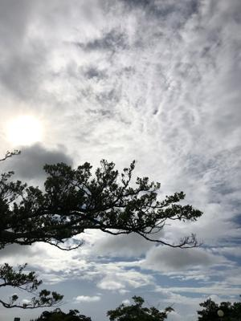
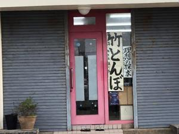
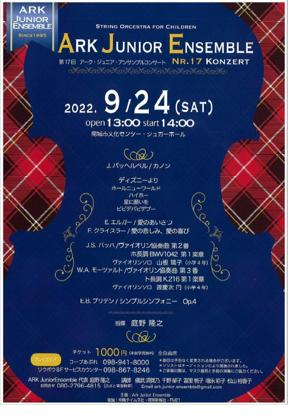

うるがいの話 ある日
最新: 竹とんぼ【うるがいの話 ある日】とは 一日だけのプログです
『うるがいの話』の最新一日だけのプログで、通信料が少なく経済的だ。カニの画像をクリックすると全ての日付が載る『うるがいの話』サイトを表示します
|
|
【うるがいの話】 うるがい(ｳﾙｶﾞｲ urugai)とは、『もずくがに』の名前でとても大きくなります。 |
|---|---|
|
|
【カミマヤーの話】 猫のことを方言でマヤーといいます。カミマヤー（kamimayaa）とは、神の猫のことです。 |
|
【たながぁの音楽】 たながぁ（ﾀﾅｶﾞｰ tanagaa）とは手長えびのことで、何種類かあり大きいのは車 エビぐらいになります。 |

|
【ぶながぁの話】 ぶながぁ(ﾌﾞﾅｶﾞｰ bunagaa)とは、赤い髪の毛、赤い身体、そして身長は１ｍ２０ｃｍ ぐらい、川の蟹を食べているの目撃された。場所は沖縄県国頭郡大宜味村のと ある村僕の隣近所に住んでいる爺さんから、聞いた話です。 |
|
|
【ギーマの話】 ギーマ(giima)とは、山原の里山に咲くスズランに似た、 花を付けます。実は食べられます、 気が付くと口の周りが紫になっています。 |
2022年09月03日 (土）竹とんぼ
16:17
  
昨日、晴れ間があったスキを見計らってジョギングをした。写真は塾の向かい
の報道近くにある信号待ちで撮った。一緒に信号待ちしていた小学生らしき女
の子二人が、『竹とんぼってなに』と話していた。今の子供達にとって実物の
竹とんぼで遊ぶことは無いだろう。私が中学生の頃、浦添市に住んでいた従兄
弟達に小刀で竹トンボをつくってあげた。彼らは、竹とんぼを飛ばして無邪気
に喜び遊んでいた。それから、彼らから私は『竹とんぼのニーニー』と呼んで
いる（還暦をつぎたのでさすがに、いまは・・・ニーニーと呼んでいるが）。
塾は、シャッターを一部締めながらも開いていた。履物から二人はいる、ふむ
ふむ・・・入口に何やらビラが貼られている。ビラは、前から気づいていたが
調べた『第１７回アーク・ジュニア・アンサンブルコンサート』、なるほど芸
術的か繋がっている。９月２４日に演奏会が予定しているが、台風に影響され
なければいいとフと思う。『人間国宝 歌舞伎俳優 坂東玉三郎 お話と舞～
沖縄スペシャル～』が昨日開催予定だったが、台風１１号の接近で早々に公演
中止になった。無理強いしたら開催できたかも、でも飛行機など交通機関がグ
チャになるしやはりダメか。キャンセルに係る費用は大変だろうな・・・・。
今日は、一日中雨である、気温も下がって、風はまだ強くないか、でも外へは
出れない。
１６時１２分 ビットコインの総資産 ￥８、０８５↓